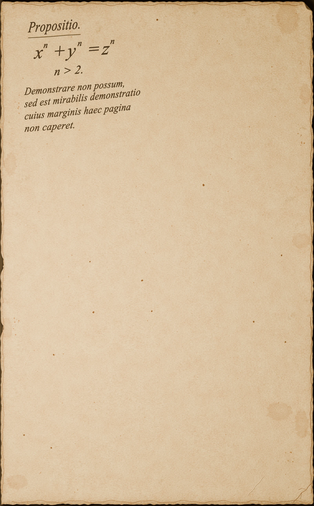

Ausencia · Persistencia · Demostración
Pierre de Fermat
Siglo XVII
El margen
del tiempo.
Una ecuación. Una afirmación. Una página casi vacía. El espacio que una demostración no ocupó se convierte en la medida de una espera de más de tres siglos.
La historia detrás de la obra
Obra digital · 2026Selecciona la imagen para ampliarla ↗
A veces, lo que falta en una página pone a trabajar a muchas generaciones.
Detrás de la imagen
La prueba
que no quedó escrita
Hacia 1637, Pierre de Fermat anotó en el margen de su ejemplar de la Arithmetica de Diofanto que había encontrado una demostración admirable, pero que el margen era demasiado pequeño para escribirla. Se refería a una afirmación sobre potencias de números enteros.[1]
El enunciado podía expresarse de forma sencilla. Encontrar una prueba general resultó mucho más difícil. La afirmación sobrevivió a Fermat y se convirtió en un problema que atravesó generaciones de matemáticos.
En 1993, Andrew Wiles anunció una demostración. La revisión detectó una laguna; Wiles, con Richard Taylor, logró resolverla en 1994. La publicación definitiva llegó en 1995, más de 350 años después de la célebre anotación.[1][2][3]
De Fermat no conservamos una demostración general de este resultado. La página vacía de la obra da forma a esa ausencia y a la larga distancia entre afirmar una verdad y conseguir demostrarla.
Lectura de la obra
Tres detalles
para mirar de cerca.
La escritura en una esquina
El texto ocupa poco espacio. Su ubicación invita a acercarse y a descubrir que una observación breve puede abrir una pregunta enorme.
El papel envejecido
Las manchas, los bordes y los pliegues convierten la superficie en una imagen del tiempo acumulado. El soporte parece haber esperado junto con el problema.
Todo lo que queda en blanco
El vacío representa la demostración ausente. Es también un espacio para quienes continuaron buscando: un conocimiento que pasa de una vida a otra antes de completarse.
La anotación latina de la imagen es una recreación artística inspirada en el relato del margen. No reproduce literalmente la nota histórica de Fermat.
Una idea para explorar
Una ecuación sencilla.
Una prueba extraordinaria.
El último teorema de Fermat afirma que no existen enteros positivos x, y, z que satisfagan esta igualdad cuando n es un entero mayor que 2:
Con n = 2 sí hay soluciones: por ejemplo, 3² + 4² = 5². Cambia el exponente para observar qué ocurre con esos mismos tres números.
Prueba con 3, 4 y 5
9 + 16 = 25
Con n = 2, la terna (3, 4, 5) satisface la igualdad: 9 + 16 = 25.
Exploramos únicamente la terna (3, 4, 5). Este ejemplo ilustra la pregunta; la demostración del teorema debe abarcar todas las ternas de enteros positivos y todos los exponentes enteros mayores que 2.
La anotación
La nota del margen plantea el desafío que después se conocerá como último teorema de Fermat.
El anuncio
Wiles presenta su demostración en Cambridge; la revisión encuentra una laguna.
El paso decisivo
Wiles y Taylor resuelven la dificultad de la prueba.
La publicación
Aparecen los artículos con la demostración definitiva.
Para seguir explorando
Fuentes históricas · Consultadas en octubre de 2026
- Universidad de Cambridge · Faculty of Mathematics — La historia del teorema y el testimonio de Andrew Wiles ↗
- Universidad de Oxford · Mathematical Institute — La corrección de la demostración en 1994 ↗
- Universidad de Toronto · Mathematics Network — Referencias de los dos artículos publicados en 1995 ↗
Obra digital realizada en 3D con papel, deterioro y escritura recreados para la composición. La obra toma el vacío como una imagen de la demostración ausente y del tiempo dedicado a encontrarla.
Continuar el recorrido
Un mundo en una esfera
Srinivasa Ramanujan